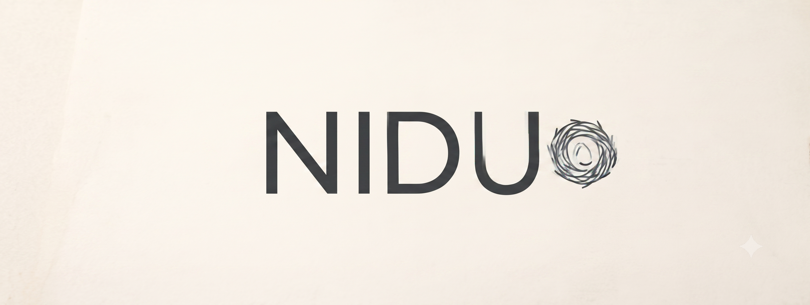
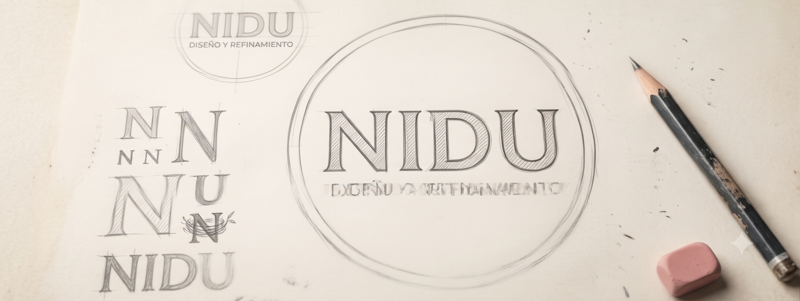
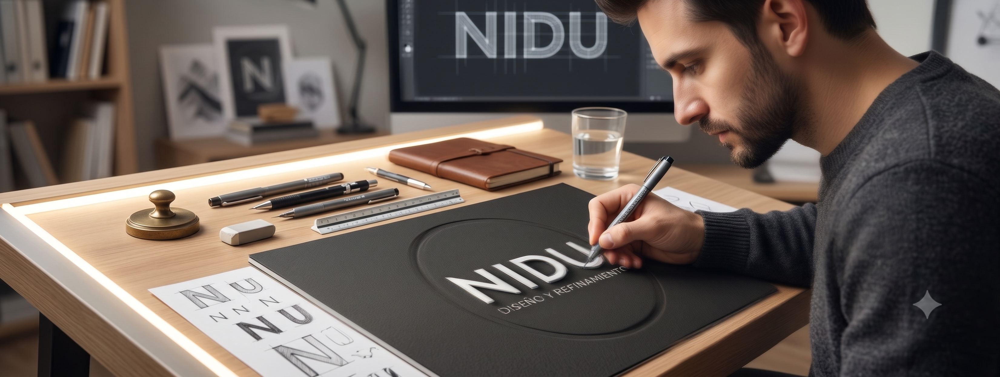

NAMING
El naming es el proceso de creación y selección de un nombre para una marca, producto o empresa. Es una parte fundamental del branding, ya que el nombre es a menudo la primera impresión que los consumidores tienen de una empresa. Un buen naming debe ser memorable, fácil de pronunciar, relevante para el producto o servicio que representa, y capaz de transmitir la personalidad y los valores de la compañía. El proceso de naming involucra la investigación de mercado, la generación de ideas creativas, la evaluación de opciones y la verificación legal de los registros para asegurarse de que el nombre elegido no infrinja derechos de terceros.

LISTADOS

ANALISIS

DISEÑO
PROCESO DEL NAMING
Búsqueda de nuevas opciones
El Brief debe responder a la identidad del proyecto.
¿Qué valores debe transmitir?
¿Cuál es el tono de voz?
En este caso, ya se define el rumbo desde Brief del proyecto. La calidez orgánica inspirada en el entorno local como el nido y la segunda opción el naranjo. El listado de nombres surge de esa métrica.
Opciones con disponibilidad de registros
Luego de confeccionar un listado de más de 50 nombres, se eligieron los más coherentes al proyecto para continuar con las consultas de cada uno y así constatar cuales son aquellos que se encuentran disponibles para registros de marca y de dominio.
Primeros nombres elegidos
Los primeros nombres elegidos fueron los siguientes.
Lumi: De Autor (Apellido).
Arancia: Evocativo / Conceptual. Significa Naranja en italiano.
Nesten: Del término en inglés "Nesting" derivado de nest o nido.
Nydia/Nidia: El nombre místico asociado con "nido".
Sugerencia NIDU
Ésta es la última sugerencia de nombre para el proyecto. Inspirado en Nido.
Se hicieron las consultas correspondientes de registro de marca y dominio web los cuales se encuentran aptos para utilizar.
Concepto NIDU
Para el storytelling, el concepto detrás de NIDU se puede articular bajo la idea de la arquitectura esencial. Si recordamos el análisis anterior, NIDO tenía una fuerza conceptual inmensa (el hogar, la estructura, el refugio) pero corría el riesgo de sonar muy literal o rústico. Por otro lado, NIDIA aportaba elegancia, pero abría la puerta a la confusión con un nombre propio femenino.
NIDU resuelve la ecuación de forma perfecta.